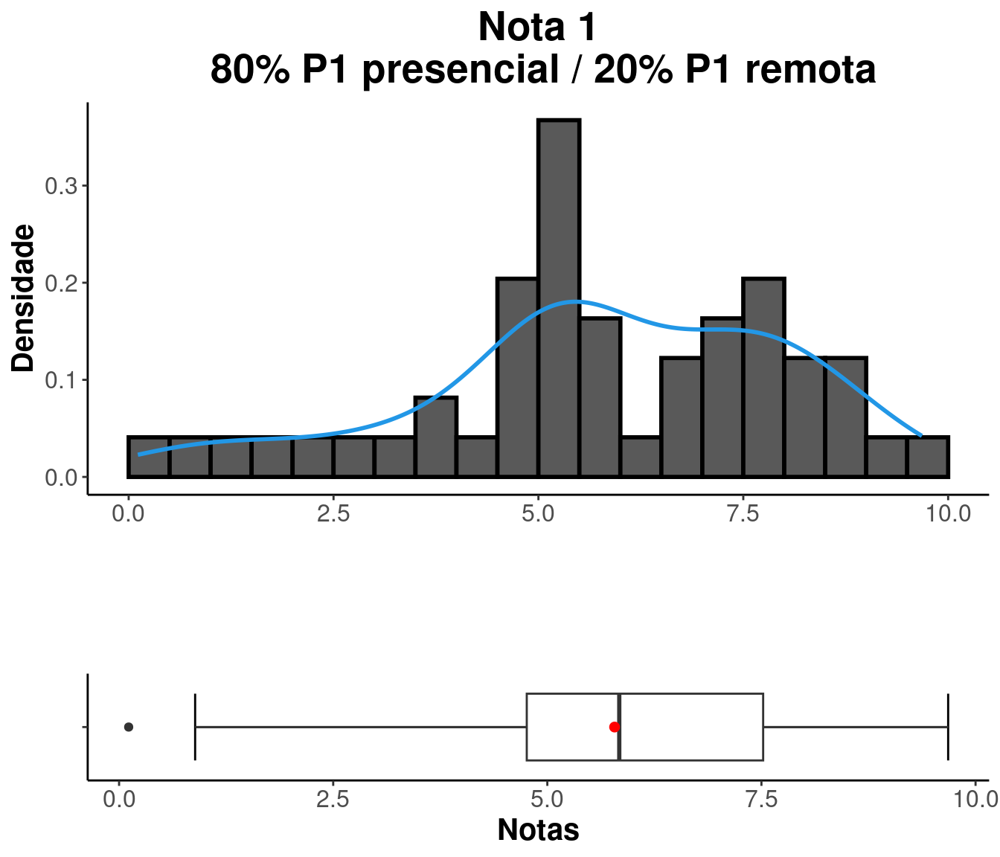
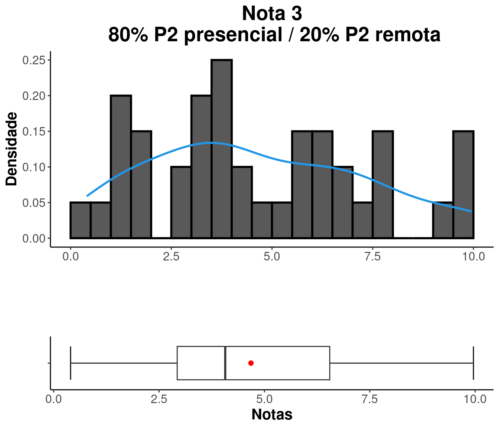

Estatística Básica
Prof. Me. Lineu Alberto
Cavazani de Freitas
Prof. Dr. Paulo Justiniano Ribeiro Jr
Prof. Dr. Paulo Justiniano Ribeiro Jr
2023/01 - Bacharelado em Estatística
2023/01 - Bacharelado em Estatística
Notas e frequência
Busque sua situação digitando seu GRR na caixa “Search”.
Análise das notas
P1 presencial
| Minimo | Quartil_1 | Media | Mediana | Quartil_3 | Maximo |
|---|---|---|---|---|---|
| 0 | 4.1 | 5.361 | 5.1 | 7 | 9.6 |

P1 remota
| Minimo | Quartil_1 | Media | Mediana | Quartil_3 | Maximo |
|---|---|---|---|---|---|
| 0 | 7.1 | 7.414 | 8.9 | 9.8 | 10 |
P1
| Minimo | Quartil_1 | Media | Mediana | Quartil_3 | Maximo |
|---|---|---|---|---|---|
| 0.888 | 4.92 | 8.055 | 5.9 | 7.52 | 112 |


|

|

|